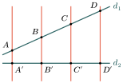
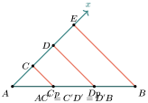
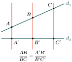
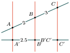
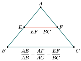
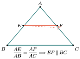
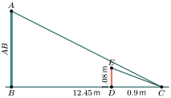
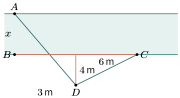

វត្ថុបំណង
- ប្រើបន្ទាត់ស្របដើម្បីចែកអង្កត់ជាចំណែកប៉ុនគ្នា
- ប្រើទ្រឹស្ដីបទតាលែសដើម្បីគណនារង្វាស់អង្កត់
- អនុវត្តទ្រឹស្ដីបទតាលែសក្នុងត្រីកោណនិង ចតុកោណពាយ ។
1. បន្ទាត់ស្របនិងខ្នាត់
ឧទាហរណ៍ : គេមានបន្ទាត់ស្របបួន \(\displaystyle (AA')\) , \(\displaystyle (BB')\) , \(\displaystyle (CC')\) និង \(\displaystyle (DD')\) កាត់បន្ទាត់ពីរ \(\displaystyle d_1\) និង \(\displaystyle d_2\) ហៅថា ខ្នាត់ ។ នៅលើខ្នាត់ \(\displaystyle d_1\) បើ \(\displaystyle AB = BC = CD\) នោះគេក៏បាន \(\displaystyle A'B' = B'C' = C'D'\) នៅលើ \(\displaystyle d_2\) ដែរ ។

បើគេគូសអង្កត់ \(\displaystyle AE\) , \(\displaystyle BF\) និង \(\displaystyle CG\) ឱ្យស្របនឹងបន្ទាត់ \(\displaystyle d_2\) តាមលក្ខណៈប្រលេឡូក្រាម គេបាន \(\displaystyle AE = A'B'\) , \(\displaystyle BF = B'C'\) , \(\displaystyle CG = C'D'\) ។ ម្យ៉ាងវិញទៀតតាមករណីប៉ុនគ្នា (ម.ជ.ម) ត្រីកោណ \(\displaystyle ABE\) , \(\displaystyle BCF\) , \(\displaystyle CDG\) ជាត្រីកោណប៉ុនគ្នា ។ វិបាកយើងបាន \(\displaystyle AE = BF = CG\) ។ ដូចនេះ \(\displaystyle A'B' = B'C' = C'D'\) ។
បន្ទាត់ស្របដែលកាត់ដោយខ្នាត់បែបនេះហៅថា បន្ទាត់ស្របស្មើចម្ងាយ ។
ជារួម : បើបន្ទាត់ស្របកំណត់នៅលើខ្នាត់មួយបានអង្កត់ប៉ុនគ្នានោះវាកំណត់នៅលើខ្នាត់ផ្សេងទៀតក៏បានអង្កត់ប៉ុនគ្នាដែរ ។
លំហាត់គំរូទី 1 : ក្នុងរូបគេមានបន្ទាត់ \(\displaystyle \Delta_1\) , \(\displaystyle \Delta_2\) , \(\displaystyle \Delta_3\) ជាបន្ទាត់ស្របគ្នា ។ បើ \(\displaystyle AC = 4\text{cm}\) ចូរគណនាប្រវែង \(\displaystyle AB\) និង \(\displaystyle BC\) ។
ចម្លើយ : គណនាប្រវែង \(\displaystyle AB\) និង \(\displaystyle BC\) ។ ដោយ \(\displaystyle \Delta_1\) , \(\displaystyle \Delta_2\) , \(\displaystyle \Delta_3\) មិនកំណត់បានអង្កត់ប៉ុនគ្នានៅលើខ្នាត់ \(\displaystyle d_1\) ក្នុងករណីនេះគេត្រូវគូសបន្ទាត់ស្របចំនួន 3 បន្ថែមទៀតដើម្បីប្រែក្លាយវាឱ្យបានបន្ទាត់ស្របស្មើចម្ងាយ ហើយនៅលើខ្នាត់ \(\displaystyle d_2\) គេក៏បានអង្កត់ចំនួន 5 ប៉ុនគ្នាដែរដែលអង្កត់នីមួយៗមានប្រវែងស្មើនឹង \(\displaystyle \frac{4}{5} = 0.8\text{cm}\) នាំឱ្យ \(\displaystyle AB = 2 \times 0.8 = 1.6\text{cm}\) និង \(\displaystyle BC = 3 \times 0.8 = 2.4\text{cm}\) ។
លំហាត់គំរូទី 2 : គេមានអង្កត់ \(\displaystyle AB\) មួយ ។ ចូរចែកអង្កត់ \(\displaystyle AB\) ជាបីផ្នែកប៉ុនគ្នា ។
ចម្លើយ : ដោយគេពុំអាចប្រើម៉ែត្រដើម្បីចែក \(\displaystyle AB\) ជាបីឯកតាបាន នោះគេត្រូវសង់កន្លះបន្ទាត់ \(\displaystyle Ax\) ដោយប្រើម៉ែត្រដើម្បីចែកនៅលើកន្លះបន្ទាត់ \(\displaystyle Ax\) ឱ្យបានជាបីចំណែកប៉ុនគ្នាកំណត់ដោយចំណុច \(\displaystyle C\) , \(\displaystyle D\) និង \(\displaystyle E\) ។ ភ្ជាប់ \(\displaystyle BE\) រួចគូសបន្ទាត់ចេញពីចំណុច \(\displaystyle D\) និង \(\displaystyle C\) ឱ្យស្របនឹង \(\displaystyle (EB)\) កាត់អង្កត់ \(\displaystyle AB\) ត្រង់ \(\displaystyle D'\) និង \(\displaystyle C'\) ។ យើងបាន \(\displaystyle AC' = C'D' = D'B\) ។ ធ្វើយ៉ាងនេះមានន័យថាគេបានចែក \(\displaystyle AB\) ជាបីផ្នែកប៉ុនគ្នា ។

ប្រតិបត្តិ : \(\displaystyle P\) ជាចំណុចមួយនៃអង្កត់ \(\displaystyle AB\) ។ ចូរសង់ \(\displaystyle P\) ដើម្បីឱ្យបាន \(\displaystyle \frac{AP}{AB} = \frac{2}{5}\) ។
2. ទ្រឹស្ដីបទតាលែស
ឧទាហរណ៍ទី 1 : គេមានបន្ទាត់ \(\displaystyle AA'\) , \(\displaystyle BB'\) , \(\displaystyle CC'\) ជាបន្ទាត់ស្របគ្នានៅលើខ្នាត់ \(\displaystyle d_1\) ។ បើ \(\displaystyle AB = a\) និង \(\displaystyle BC = 3a\) នោះផលធៀប \(\displaystyle \frac{AB}{BC} = \frac{a}{3a} = \frac{1}{3}\) ។

នោះយើងនឹងស្រាយបញ្ជាក់ថានៅលើខ្នាត់ \(\displaystyle d_2\) ក៏មានផលធៀប \(\displaystyle \frac{A'B'}{B'C'} = \frac{1}{3}\) ដែរ ។ ឧបមាថា \(\displaystyle A'B' = b\) នោះគេគូសបន្ទាត់ស្របស្មើចម្ងាយពីរបន្ថែមទៀត យើងបាន \(\displaystyle B'C' = 3b\) ហើយមានផលធៀប \(\displaystyle \frac{A'B'}{B'C'} = \frac{b}{3b} = \frac{1}{3}\) ដូចនេះ \(\displaystyle \frac{AB}{BC} = \frac{A'B'}{B'C'} = \frac{1}{3}\) ។
ឧទាហរណ៍ទី 2 : គេមានបន្ទាត់ស្រប \(\displaystyle AA'\) , \(\displaystyle BB'\) , \(\displaystyle CC'\) កាត់ខ្នាត់ \(\displaystyle d_1\) និង \(\displaystyle d_2\) បានអង្កត់សមាមាត្រ \(\displaystyle \frac{AB}{BC} = \frac{A'B'}{B'C'}\) បើគេប្ដូរតួមធ្យមនៃសមាមាត្រ \(\displaystyle \frac{AB}{BC} = \frac{A'B'}{B'C'}\) គេបាន \(\displaystyle \frac{AB}{A'B'} = \frac{BC}{B'C'} \quad (1)\)
តាម (1) គេអាចសរសេរ \(\displaystyle \frac{AB}{A'B'} = \frac{BC}{B'C'} = \frac{AB + BC}{A'B' + B'C'} = \frac{AC}{A'C'} \quad (2)\) តាមទំនាក់ទំនង (1) និង (2) យើងបាន \(\displaystyle \frac{AB}{A'B'} = \frac{BC}{B'C'} = \frac{AC}{A'C'}\) ជារួម : បើបន្ទាត់ \(\displaystyle AA' \parallel BB' \parallel CC'\) គេបាន \(\displaystyle \frac{AB}{A'B'} = \frac{BC}{B'C'} = \frac{AC}{A'C'}\) ។
ទ្រឹស្ដីបទតាលែស : បើបន្ទាត់ច្រើនស្របគ្នានៅលើខ្នាត់ពីរកំណត់បានអង្កត់សមាមាត្រគ្នា ។
លំហាត់គំរូទី 1 : គេឱ្យបន្ទាត់ \(\displaystyle AA' \parallel BB' \parallel CC'\) ដែលមាន \(\displaystyle AB = 2\text{cm}\) , \(\displaystyle BC = 3\text{cm}\) និង \(\displaystyle A'B' = 2.5\text{cm}\) ។ ចូរគណនា \(\displaystyle B'C'\) ។

ចម្លើយ : គណនា \(\displaystyle B'C'\) តាមទ្រឹស្ដីបទតាលែសគេបាន
ដូចនេះ \(\displaystyle B'C' = 3.75\text{cm}\) ។
លំហាត់គំរូទី 2 : គេមាន \(\displaystyle \Delta_1\) និង \(\displaystyle \Delta_2\) ជាបន្ទាត់ស្របគ្នា ។ ចូរគណនាតម្លៃ \(\displaystyle x\) គិតជា \(\displaystyle \text{cm}\) ។
ចម្លើយ : គណនាតម្លៃ \(\displaystyle x\) គិតជា \(\displaystyle \text{cm}\)
នាំឱ្យ \(\displaystyle x = \sqrt{3}\) \(\displaystyle \approx 1.7\text{cm}\) ដូចនេះ \(\displaystyle x \approx 1.7\text{cm}\) ។
ប្រតិបត្តិ : គេមាន \(\displaystyle \Delta_1\) , \(\displaystyle \Delta_2\) , \(\displaystyle \Delta_3\) , \(\displaystyle \Delta_4\) ជាបន្ទាត់ស្របគ្នា ។ ចូរគណនាតម្លៃ \(\displaystyle x\) និង \(\displaystyle y\) ។
3. អនុវត្តន៍ក្នុងត្រីកោណនិងចតុកោណ
3.1. អនុវត្តន៍ក្នុងត្រីកោណ
ឧទាហរណ៍ទី 1 : គេមានត្រីកោណ \(\displaystyle ABC\) បើគេគូសបន្ទាត់ \(\displaystyle EF\) មួយស្របទៅនឹងជ្រុងមួយនៃត្រីកោណហើយកាត់ជ្រុងពីរទៀត ។

តាមទ្រឹស្ដីបទតាលែសគេបាន \(\displaystyle EF \parallel BC\) នោះ \(\displaystyle \frac{AE}{AB} = \frac{AF}{AC}\) ។
ឧទាហរណ៍ទី 2 : គេមានត្រីកោណ \(\displaystyle ABC\) និងបន្ទាត់ \(\displaystyle EF\) មួយដែល \(\displaystyle \frac{AE}{AB} = \frac{AF}{AC}\) ។ យើងនឹងស្រាយបញ្ជាក់ថា \(\displaystyle EF \parallel BC\) ។ តាមចំណុច \(\displaystyle E\) គូសបន្ទាត់មួយស្របនឹង \(\displaystyle BC\) កាត់អង្កត់ \(\displaystyle AC\) ត្រង់ចំណុច \(\displaystyle F'\) តាមទ្រឹស្ដីបទតាលែសបើ \(\displaystyle EF' \parallel BC\) គេបាន \(\displaystyle \frac{AE}{AB} = \frac{AF'}{AC} \quad (1)\) \(\displaystyle \frac{AE}{AB} = \frac{AF}{AC} \quad (2)\)

តាមទំនាក់ទំនង (1) និង (2) យើងបាន \(\displaystyle \frac{AF'}{AC} = \frac{AF}{AC}\) , \(\displaystyle AF' = AF\) តាមចំណុច \(\displaystyle E\) គេអាចគូសបានបន្ទាត់ស្របតែមួយគត់ដែលស្របនឹង \(\displaystyle BC\) ដូចនេះ \(\displaystyle F'\) ត្រួតលើ \(\displaystyle F\) ។ ហេតុនេះ \(\displaystyle EF \parallel BC\) ។
ជារួម : \(\displaystyle EF\) ជាបន្ទាត់កាត់ជ្រុងពីរនៃត្រីកោណ \(\displaystyle ABC\) បើ \(\displaystyle EF \parallel BC\) នោះ \(\displaystyle \frac{AE}{AB} = \frac{AF}{AC}\)
ច្រាសមកវិញ : បើ \(\displaystyle \frac{AE}{AB} = \frac{AF}{AC}\) នោះ \(\displaystyle EF \parallel BC\) ។
ឧទាហរណ៍ទី 3 : គេមានត្រីកោណ \(\displaystyle ABC\) ដែល \(\displaystyle EF \parallel BC\) យើងនឹងស្រាយបញ្ជាក់ថា \(\displaystyle \frac{AE}{AB} = \frac{AF}{AC} = \frac{EF}{BC}\) បើ \(\displaystyle EF \parallel BC\) យើងបាន \(\displaystyle \frac{AE}{AF} = \frac{AB}{AC}\) ឬ \(\displaystyle \frac{AE}{AB} = \frac{AF}{AC} \quad (1)\) ម្យ៉ាងទៀតគេគូស \(\displaystyle EN \parallel AC\) នោះ \(\displaystyle NC = EF\) , \(\displaystyle EN \parallel FC\)
យើងបាន \(\displaystyle \frac{BC}{AB} = \frac{NC}{AE}\) , \(\displaystyle \frac{BC}{AB} = \frac{EF}{AE}\) ឫ \(\displaystyle \frac{AE}{AB} = \frac{EF}{BC} \quad (2)\) តាមទំនាក់ទំនង (1) និង (2) យើងបាន \(\displaystyle \frac{AE}{AB} = \frac{AF}{AC} = \frac{EF}{BC}\) ។
ជារួម : បើបន្ទាត់ស្របទៅនឹងជ្រុងមួយនៃត្រីកោណកាត់ជ្រុងពីរទៀត បានត្រីកោណថ្មីមួយដែលត្រីកោណទាំងពីរនោះមានជ្រុងសមាមាត្រគ្នា ។
លំហាត់គំរូទី 1 : ក្នុងត្រីកោណមួយមាន \(\displaystyle AB \parallel DC\) ។ ចូរគណនាតម្លៃ \(\displaystyle x\) គិតជា \(\displaystyle \text{cm}\) ។
ចម្លើយ : គណនាតម្លៃ \(\displaystyle x\) គិតជា \(\displaystyle \text{cm}\) ដោយ \(\displaystyle AB \parallel DC\) (សមម្មតិកម្ម) នោះ \(\displaystyle \frac{EA}{EC} = \frac{AB}{CD}\)
(ចំណាំ៖ តាមរូបភាព \(\displaystyle EC\) គួរតែស្មើ \(\displaystyle 8+10=18\) ប៉ុន្តែតាមអត្ថបទសរសេរគឺ \(\displaystyle 10\))
ដូចនេះ \(\displaystyle x = 12\text{cm}\) ។
លំហាត់គំរូទី 2 : ក្នុងត្រីកោណ \(\displaystyle PTQ\) ដែល \(\displaystyle PN = 6\) , \(\displaystyle PR = 12\) , \(\displaystyle RT = 4\) និង \(\displaystyle NQ = 2\) ។ ចូរបង្ហាញបញ្ជាក់ថា \(\displaystyle NR \parallel QT\) ។
ចម្លើយ : ស្រាយបញ្ជាក់ថា \(\displaystyle NR \parallel QT\) គេមាន \(\displaystyle \frac{PN}{NQ} = \frac{6}{2} = 3 \quad (1)\) តែ \(\displaystyle \frac{PR}{RT} = \frac{12}{4} = 3 \quad (2)\) តាមទំនាក់ទំនង (1) និង (2) យើងបាន \(\displaystyle \frac{PR}{NQ} = \frac{PR}{RT}\) ដូចនេះ \(\displaystyle NR \parallel QT\) ។
លំហាត់គំរូទី 3 : គេចង់វាស់កម្ពស់ដើមឈើមួយដើម ។ គេយកបង្គោលមួយដើមមកដាល់ក្នុងម្លប់ដើមឈើនោះហើយគេរំកិលវាដោយដៃ ឱ្យស្រមោលនៃចុងបង្គោល \(\displaystyle E\) និងស្រមោលនៃចុងដើមឈើ \(\displaystyle A\) ត្រួតស៊ីគ្នាត្រង់ចំណុច \(\displaystyle C\) ។ ដោយស្គាល់ប្រវែងបង្គោល \(\displaystyle DE = 1.08\text{m}\) ប្រវែងស្រមោលបង្គោល \(\displaystyle CD = 0.9\text{m}\) និងប្រវែងស្រមោលដើមឈើមានប្រវែង \(\displaystyle CB = 12.45\text{m}\) ។ ចូររកកម្ពស់នៃដើមឈើនោះ ។

ចម្លើយ : គេបាន \(\displaystyle \frac{AB}{DE} = \frac{CB}{CD}\) ឬ \(\displaystyle AB = \frac{CB \times DE}{CD} = \frac{12.45 \times 1.08}{0.9} = 14.94\text{m}\) ។ ដូចនេះ \(\displaystyle AB = 14.94\text{m}\) ។
ប្រតិបត្តិ : គ្រូនាំសិស្សចេញមកក្រៅថ្នាក់ដើម្បីអនុវត្តរង្វាស់កម្ពស់ដើមឈើមួយដើមដែលដិតក្នុងទីធ្លាសាលា ។ ដោយឱ្យសិស្សម្នាក់យកបង្គោលមួយដើមដែលមានប្រវែង \(\displaystyle 1\text{m}\) មកដាក់ក្នុងម្លប់ដើមឈើនោះ ហើយរំកិលឱ្យស្រមោលនៃចុងបង្គោលនិងស្រមោលនៃចុងដើមឈើត្រួតស៊ីគ្នា ។ ចូរគណនាកម្ពស់នៃដើមឈើ ។
3.2. អនុវត្តន៍ក្នុងចតុកោណព្នាយ
ឧទាហរណ៍ទី 1 : គេមានចតុកោណព្នាយ \(\displaystyle ABCD\) ។ បើគេគូសបន្ទាត់ \(\displaystyle EF\) មួយស្របទៅនឹងបាតទាំងពីរនៃចតុកោណព្នាយ ហើយកាត់ជ្រុងពីរទៀតត្រង់ \(\displaystyle E\) និង \(\displaystyle F\) ។
តាមទ្រឹស្តីបទតាលែស \(\displaystyle EF \parallel DC \parallel AB\) នោះគេបាន \(\displaystyle \frac{AE}{AD} = \frac{BF}{BC} , \frac{AD}{AE} = \frac{BC}{BF} , \frac{AD}{DE} = \frac{BC}{CF}\) ។
ឧទាហរណ៍ទី 2 : គេមានអង្កត់ \(\displaystyle EF\) កាត់តាមចំណុចកណ្ដាលនៃជ្រុងមិនស្របនៃចតុកោណព្នាយ \(\displaystyle ABCD\) ។
គេមាន \(\displaystyle \frac{DE}{DA} = \frac{1}{2}\) (\(\displaystyle E\) កណ្ដាលនៃ \(\displaystyle AD\))
ម្យ៉ាងទៀត \(\displaystyle \frac{CF}{CB} = \frac{1}{2}\) (\(\displaystyle F\) កណ្ដាលនៃ \(\displaystyle CB\))
នាំឱ្យ \(\displaystyle \frac{DE}{DA} = \frac{CF}{CB}\)
តាមតាលែសគេបាន \(\displaystyle EF \parallel DC \parallel AB\) ។
ជារួម : បើបន្ទាត់មួយស្របទៅនឹងបាតនៃចតុកោណព្នាយកាត់ជ្រុងមិនស្រប ឬបន្លាយនៃជ្រុងមិនស្របកំណត់បានអង្កត់សមាមាត្រគ្នា ។ច្រាសមកវិញ : បើបន្ទាត់មួយកាត់ជ្រុងមិនស្រប ឬបន្លាយនៃជ្រុងមិនស្របនៃចតុកោណព្នាយមួយកំណត់បានអង្កត់សមាមាត្រគ្នានោះវាស្របនឹងបាតទាំងពីរ ។
លំហាត់គំរូ : គេឱ្យ \(\displaystyle AB \parallel XY \parallel DC\)
បើ \(\displaystyle AX = 3\text{dm}\) , \(\displaystyle BC = 9\text{dm}\) , \(\displaystyle XD = 8\text{dm}\) ។
ចូរគណនា \(\displaystyle BY\) និង \(\displaystyle YC\) ។
ចម្លើយ : គណនា \(\displaystyle BY\) និង \(\displaystyle YC\)
ដោយ \(\displaystyle AB \parallel XY \parallel DC\) គេបាន \(\displaystyle \frac{BY}{BC} = \frac{AX}{AD}\) ឬ \(\displaystyle BY = \frac{AX \times BC}{AD} = \frac{3 \times 9}{11} \quad (AD = AX + DX = 3 + 8 = 11) = 2.45\text{dm}\) ។
ដោយ \(\displaystyle AB \parallel XY \parallel DC\) គេបាន \(\displaystyle \frac{YC}{XD} = \frac{BC}{AD}\) ឬ \(\displaystyle YC = \frac{XD \times BC}{AD} = \frac{8 \times 9}{11} \quad (AD = AX + XD = 3 + 8 = 11) = 6.54\text{dm}\) ។
ដូចនេះ \(\displaystyle BY = 2.45\text{dm}\) និង \(\displaystyle YC = 6.54\text{dm}\) ។
ប្រតិបត្តិ : ក្នុងត្រីកោណ \(\displaystyle ABC\) គេមាន \(\displaystyle DE \parallel AB\) ។ ចូរបំពេញក្នុងតារាងខាងក្រោម ។
| \(\displaystyle AD\) | \(\displaystyle DC\) | \(\displaystyle BE\) | \(\displaystyle EC\) | |||
| ក. | 3 | 2 | 6 | … | ||
| ខ. | 7 | 3 | … | 5 | ||
| គ. | 2 | … | 3 | 4 | ||
| \(\displaystyle AD\) | \(\displaystyle DC\) | \(\displaystyle AC\) | \(\displaystyle BE\) | \(\displaystyle EC\) | \(\displaystyle BC\) | |
| ឃ. | … | 8 | 20 | … | … | 15 |
| ង. | 12 | … | 30 | 9 | … | … |
លំហាត់
- ចូរចែកអង្កត់ \(\displaystyle AB\) ដែល \(\displaystyle AB = 6\text{cm}\) ជា 5 ចំណែកស្មើគ្នា ។
- ចូរចែកអង្កត់ \(\displaystyle AB\) ដែល \(\displaystyle AB = 11\text{cm}\) ជាអង្កត់សមាមាត្រនឹង 3 4 5 ។
- ចូរចែកអង្កត់ \(\displaystyle AB\) ដែល \(\displaystyle AB = 12\text{cm}\) ជាអង្កត់សមាមាត្រនឹង 3 5 7 ។
- គេឱ្យ \(\displaystyle AB = 7\text{cm}\) ចូរកំណត់ចំណុច \(\displaystyle C\) ដែលចែកអង្កត់ \(\displaystyle AB\) តាមផលធៀប \(\displaystyle \frac{3}{5}\) ។
- គេឱ្យ \(\displaystyle AB = 9\text{mm}\) ចូរកំណត់ចំណុច \(\displaystyle C\) និង \(\displaystyle D\) ដែលចែកអង្កត់ \(\displaystyle AB\) តាមផលធៀប \(\displaystyle \frac{5}{2}\) ។
គេមាន \(\displaystyle AB \parallel CD \parallel EF \parallel GH\) តាមរូបខាងស្តាំ ។
- ក. ចូរគណនា \(\displaystyle DF\) និង \(\displaystyle FH\) បើ \(\displaystyle AC = 6\text{cm}\) , \(\displaystyle CE = 12\text{cm}\) , \(\displaystyle EG = 4\text{cm}\) និង \(\displaystyle BD = 9\text{cm}\) ។
- ខ. ចូរគណនា \(\displaystyle BD\) , \(\displaystyle DF\) និង \(\displaystyle FH\) បើ \(\displaystyle AC = 6\text{cm}\) , \(\displaystyle CE = 12\text{cm}\) , \(\displaystyle EG = 4\text{cm}\) និង \(\displaystyle HB = 33\text{cm}\) ។
- គ. ចូរគណនា \(\displaystyle DF\) និង \(\displaystyle CG\) បើ \(\displaystyle AC = 6\text{cm}\) , \(\displaystyle CE = 12\text{cm}\) , \(\displaystyle DB = 8\text{cm}\) និង \(\displaystyle FH = 6\text{cm}\) ។
- គេឱ្យ \(\displaystyle (AB) \parallel (MN)\) ចូរគណនាប្រវែង \(\displaystyle x\) ក្នុងរូបនីមួយៗខាងក្រោម ។
- តាមរូបខាងស្តាំគេមាន \(\displaystyle BE \parallel CD\) ។ ចូរគណនាប្រវែង \(\displaystyle ED\) និង \(\displaystyle CD\) ។ រង្វាស់គិតជា \(\displaystyle \text{cm}\) ។
- ចូរគណនា \(\displaystyle a\) និង \(\displaystyle b\) តាមរូបខាងស្តាំនេះ ។ រង្វាស់ជា \(\displaystyle \text{cm}\) ។
គេចង់សង់ជណ្ដើរមួយដែលមាន 13 កាំ កម្ពស់ \(\displaystyle 2.40\text{m}\) និងប្រវែង \(\displaystyle 3.40\text{m}\) ។
- ក. ចូរសង់ត្រីកោណ \(\displaystyle ABC\) កែងត្រង់ \(\displaystyle B\) នៅក្នុងប្លង់ដែលមានមាតត្រដ្ឋាន \(\displaystyle \frac{1}{20}\) ដោយយក \(\displaystyle AB\) ជាជ្រុងឈរ និង \(\displaystyle BC\) ជាជ្រុងដេក ។
- ខ. តើគេត្រូវចែក \(\displaystyle AB\) ជាប៉ុន្មានផ្នែក ដើម្បីកំណត់ទីតាំងកម្ពស់នៃកាំនីមួយៗ ? តើគេត្រូវចែក \(\displaystyle BC\) ជាប៉ុន្មានផ្នែក ដើម្បីកំណត់ទីតាំងមុខឈរនៃកាំនីមួយៗ ?
- គ. ធ្វើវិធីចែក \(\displaystyle AB\) និង \(\displaystyle BC\) ។ ចំណាំ មាតត្រដ្ឋាន \(\displaystyle \frac{1}{20}\) មានន័យថាប្រវែង \(\displaystyle 1\text{cm}\) នៅក្នុងប្លង់ស្មើនឹងប្រវែង \(\displaystyle 20\text{cm}\) នៃរង្វាស់ពិត ។
- គេឱ្យកន្លះបន្ទាត់ពីរ \(\displaystyle OX\) និង \(\displaystyle OY\) ។ លើ \(\displaystyle OX\) គេដៅ ចំណុច \(\displaystyle I\) និង \(\displaystyle J\) ដែល \(\displaystyle OI = 2\text{cm}\) និង \(\displaystyle IJ = 3\text{cm}\) ។ លើ \(\displaystyle OY\) ដៅចំណុច \(\displaystyle I'\) , \(\displaystyle J'\) ដែល \(\displaystyle OI' = 3\text{cm}\) និង \(\displaystyle I'J' = 4.5\text{cm}\) ។ តើបន្ទាត់ \(\displaystyle II'\) និង \(\displaystyle JJ'\) ស្របគ្នាឬទេ ?
ក្នុងកីឡាដ្ឋានមួយ ដោយចង់ដឹងថាតើរបារបង្ហូតទង់ជាតិមានកម្ពស់ប៉ុន្មាន ម៉ៃត្រី សុខាបានដើរទៅឈរដូចរូបស្តាំនេះ ដោយឱ្យស្រមោលក្បាលរបស់វាត្រួតលើស្រមោលនៃទង់ ។ វាដឹងថា វាមានកម្ពស់ \(\displaystyle 1.65\text{m}\) ឋិតនៅចម្ងាយ \(\displaystyle 6.50\text{m}\) ពីជើងបង្គោលហើយម្លប់នៃទង់បិតនៅចម្ងាយ \(\displaystyle 10\text{m}\) ពីជើងបង្គោល ។
- ក. ចូរបកស្រាយស្ថានភាពនេះដោយរូបធរណីមាត្រ ។
- ខ. តើរបារទង់មានកម្ពស់ប្រហែលប៉ុន្មានម៉ែត្រពីដី ?
គេឱ្យចតុកោណ \(\displaystyle ABCD\) មួយ និង \(\displaystyle E\) ជាចំណុចប្រសព្វរវាងអង្កត់ទ្រូងទាំងពីរ ។ តាម \(\displaystyle E\) គូសបន្ទាត់ស្របនឹង \(\displaystyle BC\) ដែលកាត់តាម \(\displaystyle AB\) ត្រង់ \(\displaystyle F\) ។ តាម \(\displaystyle E\) គូសបន្ទាត់ស្របនឹង \(\displaystyle CD\) ដែលកាត់ \(\displaystyle AD\) ត្រង់ \(\displaystyle G\) ។
- ក. សរសេរទ្រឹស្តីបទតាលែសក្នុងត្រីកោណ \(\displaystyle AGE\) និង \(\displaystyle ADC\) រួចក្នុងត្រីកោណ \(\displaystyle AFE\) និង \(\displaystyle ABC\) ។
- ខ. ចូរបង្ហាញថា \(\displaystyle FG \parallel BD\) ។
ការវាយតម្លៃសមត្ថភាព (PISA)
វាស់ទទឹងទន្លេ (Measuring a River)

អ្នកវាស់វែងកំណត់បន្ទាត់ពីរស្របគ្នាតាមមាត់ទន្លេ និងសង់រូបតាមទ្រឹស្តីបទតាលែស។ ក្នុងរូប អង្កត់ផ្ដេកត្រូវគ្នាមានប្រវែង \(\displaystyle 3\) m និង \(\displaystyle 6\) m ហើយអង្កត់ឈរត្រូវគ្នាមានប្រវែង \(\displaystyle 4\) m និងទទឹងទន្លេ \(\displaystyle x\)។
សំណួរទី១៖ សរសេរសមាមាត្រដែលប្រើរកទទឹងទន្លេ \(\displaystyle x\)។
ចម្លើយ៖
សំណួរទី២៖ គណនា \(\displaystyle x\)។ ចម្លើយ៖
សំណួរទី៣៖ បើការវាស់ \(\displaystyle 3\) m មានកំហុស \(\displaystyle 0.2\) m តើលទ្ធផលទទឹងទន្លេអាចចាត់ទុកថាពិតប្រាកដទាំងស្រុងដែរឬទេ? ពន្យល់។
ចម្លើយ៖
© ២០២៦ លោកគ្រូ សាន សុខលី · «គណិតវិទ្យាថ្នាក់ទី៩ បែបទំនើប» · រក្សាសិទ្ធិគ្រប់យ៉ាង។ សៀវភៅនេះកំពុងសរសេរ ខ្លឹមសារអាចនឹងកែប្រែ។